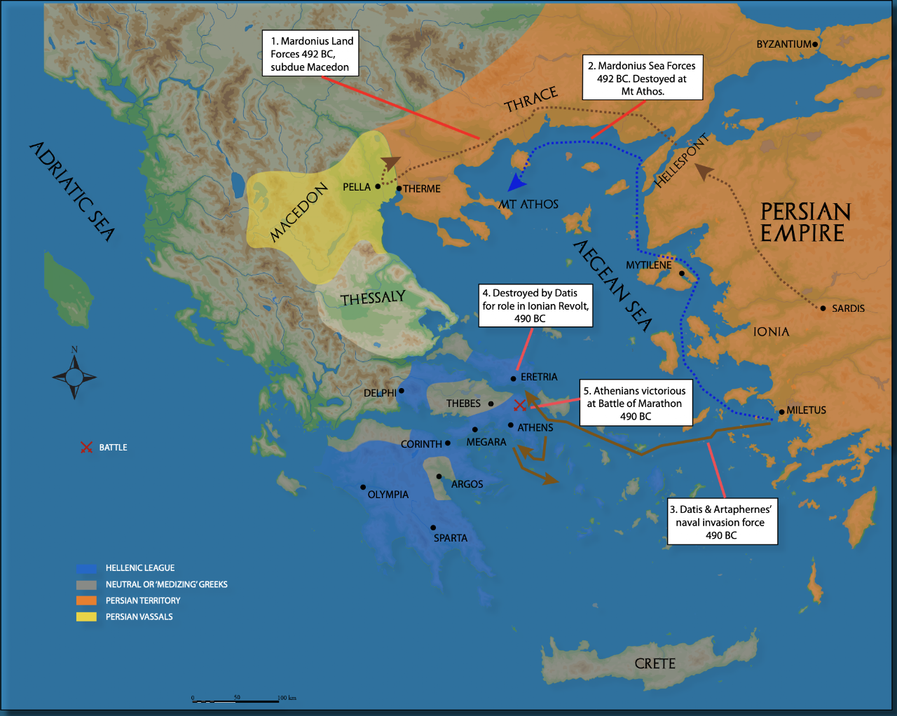
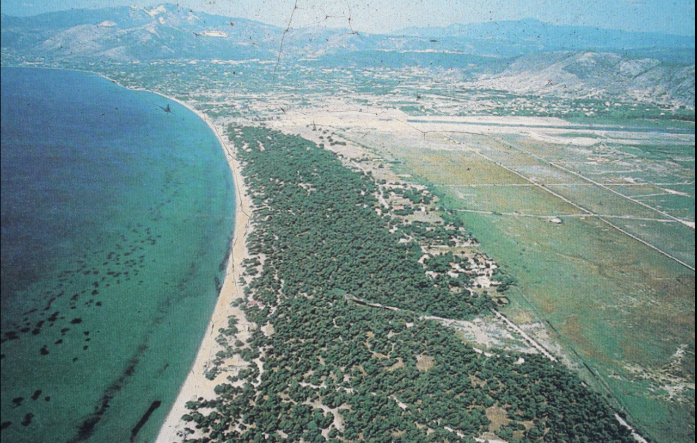
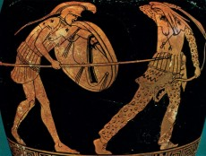
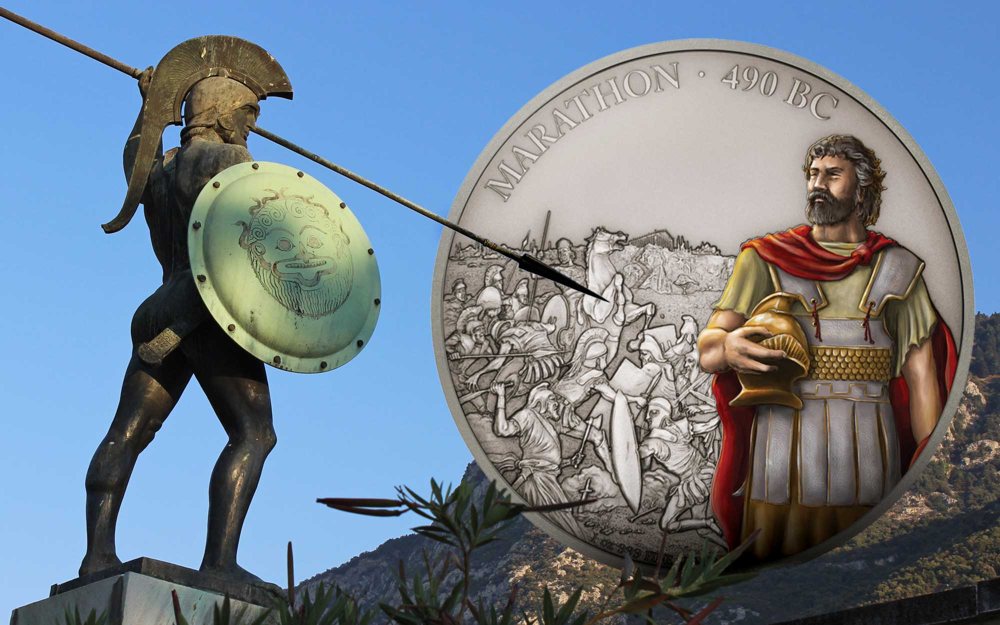
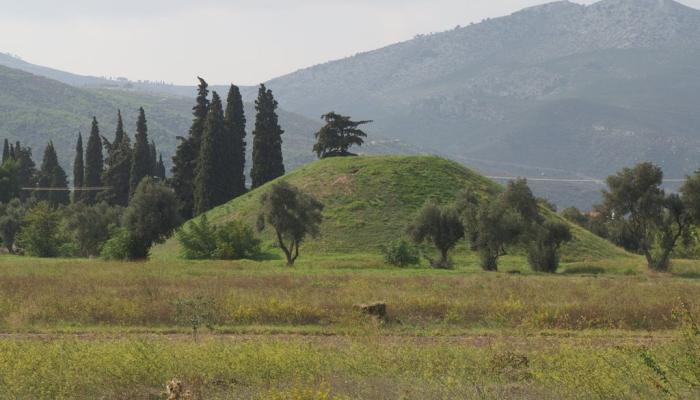
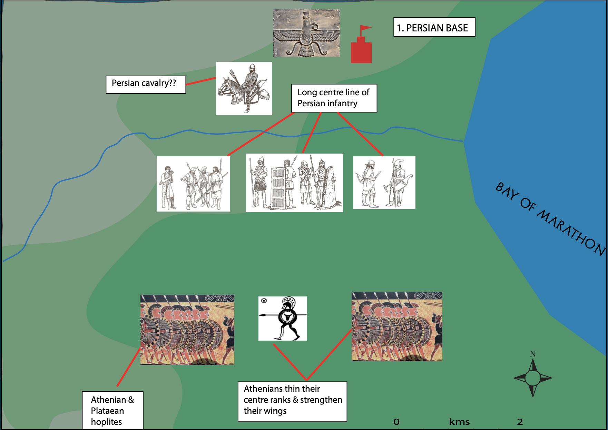
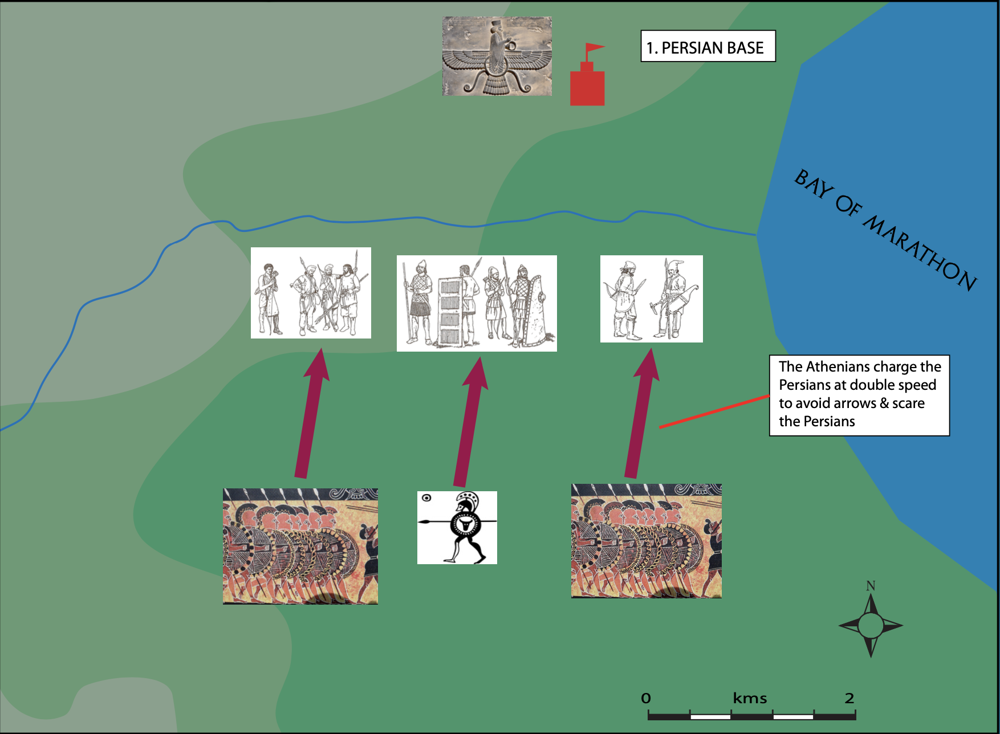
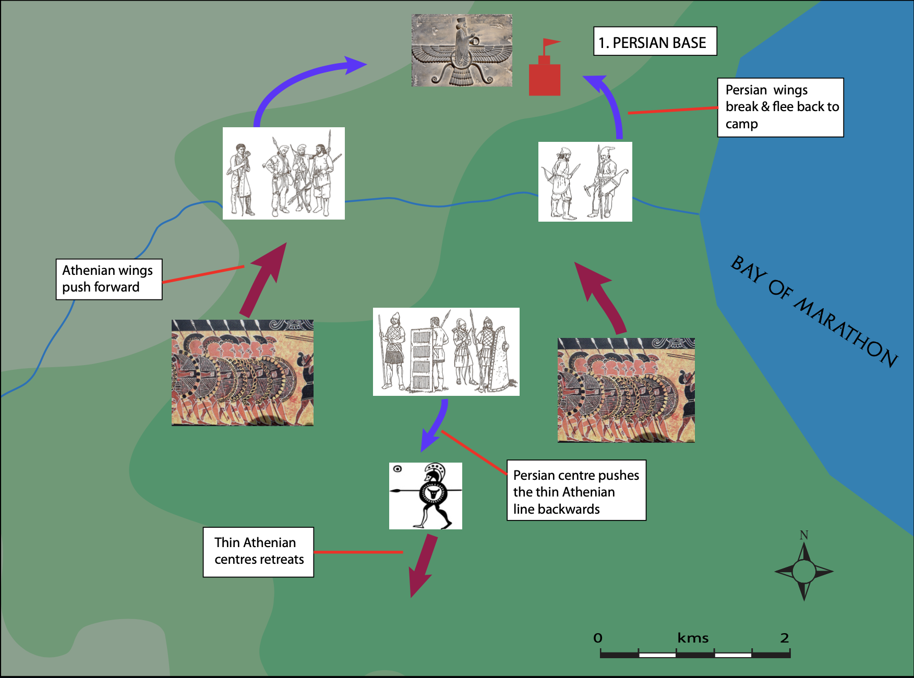
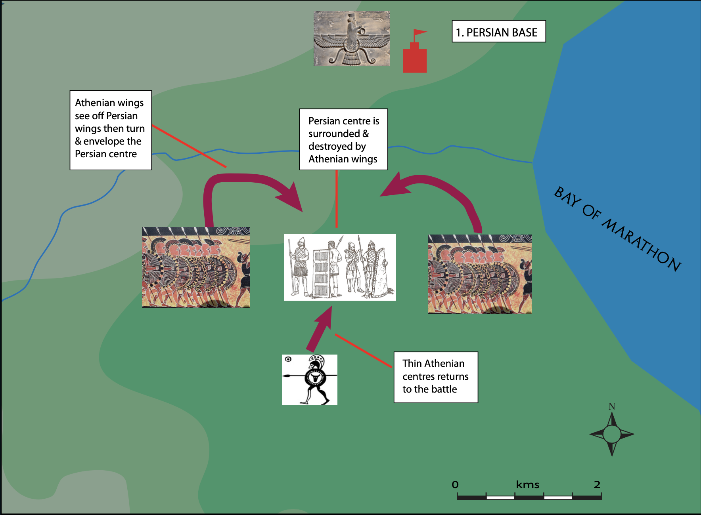
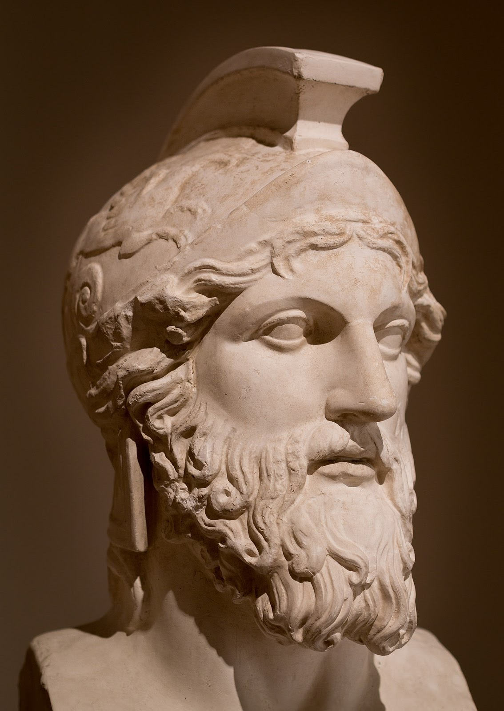

The First Invasion
Mardonius' campaign, Marathon, and the rise and fall of Miltiades
Mardonius' Invasion — 492 BC
By 494 BC, the Ionian Revolt had been suppressed. According to Herodotus, Darius sought to punish Athens and Eretria while re-establishing Persian control in Thrace and Macedonian influence. Darius appointed his son-in-law Mardonius as commander-in-chief.
Mardonius removed regional tyrants, crossed the Hellespont into Europe, and subdued Thrace and Macedonia with minimal resistance. Thasos fell under Persian control.

The Disaster at Mt Athos
While sailing around Mt Athos's promontory, Herodotus describes the catastrophe:
"a violent North Wind" caused approximately 300+ ships to be destroyed and "more than twenty thousand men" perished. Some were seized by sea monsters, dashed against rocks, or drowned due to inability to swim or cold exposure.
— Herodotus
The Invasion of 490 BC
Darius recruited additional forces and sent heralds demanding "earth and water" — symbols of submission — from Greek city-states. Most island and mainland states complied through medism (pro-Persian alignment). Athens, Eretria, and Sparta refused:
- Athens: Heralds were "thrown into a pit like criminals"
- Sparta: They were "pushed into a well" with instructions to retrieve submission tokens from there
Darius directed his assault against Athens and Eretria using 200 warships and 25,000 troops under Datis and Artaphernes. They transported Hippias, the former Athenian tyrant, intending to install him as puppet ruler.
The Island Campaign
The Persian fleet island-hopped from Asia Minor through Samos, Naxos, and Delos — where they honoured Apollo. They advanced through the Cyclades to Euboea, quickly capturing Carystus.
The Fall of Eretria
Eretria resisted for six days before falling. Herodotus records:
"entered the city, plundered and set fire to the temples in retribution for the temples which were burned at Sardis, and also reduced the people to slavery."
— Herodotus
Lack of Greek Unity
The Greek city-states remained divided. Even Athens and Eretria lacked coordinated defence plans. Peloponnesian League members, reluctant to assist, believed Persian anger targeted only these two cities. Legend claims runner Pheidippides covered 225 kilometres in two days to reach Sparta, only to learn Spartans could not deploy troops until after the Karneian festival and full moon.
The Battle of Marathon

Greek vs Persian Armies — Equipment and Fighting Styles

The Greek Hoplite
The Hoplite, named after their large round shields or Hoplons, was a group of elite heavy spearmen. They were all very similarly equipped, with a long spear and short sword, a dagger, bronze breastplates and greaves, a plumed helmet and of course, the signature bronze-plated hoplon. Because of the high quality of this equipment, surviving primary evidence ranging from paintings, pottery and carvings to existing archaeological pieces is actually a fairly common find for Greek historians.
The Persian Soldier
The Persian army comprised of the conquered levies and the Immortals. The levies were poorly equipped, badly trained and thrown into battles like livestock.
Because of the cheap nature of their equipment, little to no archaeological evidence remains.
An average soldier’s equipment is presumed to be:
- A short spear
- A small sword
- A simple wooden bow
- Cloth or leather tunics
- A cloth headdress
- A flimsy wicker or hide shield

Persian army formation
Further Reading
Discuss armament and fighting style. Refer to: Armament and Fighting Style — Greek vs Persian (opens in new tab)
Marathon — Battle Phases


Phase 1 — Formation
The Athenians were drawn up in formation: on the left wing were the Plataeans, Callimachus commanded the right wing while Miltiades took control of the “thinner lines” of the centre.

Phase 2 — The Charge
The Athenians charged at double speed.

Phase 3 — The Centre Buckles
The Athenian’s weaker centre was pushed back but the wings held firm.
The Persian wings fled to their ships.

Phase 4 — Encirclement and Rout
As the Persian centre pushed deeper into the Athenian centre, they became surrounded and trapped by the Athenian’s wings. The Persian forces were routed.
The Athenians pursued the other Persians back to their ships and managed to capture seven ships.
The Persian fleet sailed south to Athens and anchored off Phaleron.
The Athenians quickly marched south and took up a position on Mt Lycabettus. After a short time, the Persians returned home.

Decisive Battles — Battle of Marathon — Prince Corsica
Video summary
Documentary reconstruction of the Battle of Marathon (490 BC), covering strategy, tactics, and the decisive Greek victory.
Hippias guided the Persians to Marathon's Bay, approximately 40 kilometres northeast of Athens. The location offered:
- Good ship anchorage behind the "Dog's Tail" promontory
- Proximity to Euboean supply bases
- Suitable cavalry grazing grounds along marsh edges
- Strategic advantage for surprise attack and organising Hippias supporters
- Adequate space for Persian cavalry manoeuvres
Force Composition
Athens mobilised 9,000 soldiers. Only Plataea (a Boeotian town) provided support — 1,000 hoplites. Greeks faced Persian superiority: approximately 10,000–25,000 Persian forces versus Greek numbers.
Reasons for Greek Victory at Marathon
| Reason | Explanation |
|---|---|
| Motivation | The Athenians fought for their homes, families, tribes and religious shrines; for a communal ideal — tribe and city-state (polis); to preserve their new democratic way of life. According to Herodotus, freedom and equality were spirit-stirring ideals. Athenian resistance to the Persians was more united than Hippias had anticipated. |
| Weapons and Armour | Once the Persian archers were neutralised, the Greeks had the advantage: bronze visored helmets, bronze-plated breastplates (cuirass), huge shields (about one metre in diameter) and bronze greaves for protecting the lower legs. The Greek weapons (a two to three-metre long iron-headed spear and an iron sword, sixty centimetres long) were superior to the Persians' wicker shields, short spears and daggers. |
| Leadership | Although Datis was an experienced veteran, he had no real knowledge of the enemy, whereas Miltiades had first-hand knowledge of Persian methods of fighting. Miltiades showed common sense by sending the army to Marathon, preventing Miltiades' enemies from helping the Persians. The Athenian polemarch, Callimachus, as commander-in-chief, showed wisdom in listening to Miltiades' advice to fight rather than wait for the Spartans. |
| Battle Tactics, Skills and Discipline | At Marathon, the Greeks could take up a defensive position, commanding both routes to Athens while they waited to attack. The lateral extension of the phalanx, although weakening the centre, prevented the Persians from outflanking the Greeks. The Greek charge on the run threw the enemy into confusion and allowed the Greeks to fight on their own terms, at close quarters. Although the Greek hoplites were only citizen-soldiers they were disciplined and physically fit. |
Command Structure
Polemarch Archon Callimachus commanded Athenian forces, aided by ten strategoi (generals). Miltiades, former Chersonese tyrant, emerged as the key figure. His strategic argument convinced the Assembly to engage Persians directly rather than defend behind city walls.
Days of Waiting
Both forces watched each other for several days. Persians possessed numerical advantage, feared archers, and anticipated internal Athenian treachery favouring Hippias.
Where Was the Persian Cavalry?
Contradictory evidence clouds cavalry participation:
Known Facts
- Persians normally relied heavily on mounted troops
- Sea transport of horses presented considerable logistical difficulties
- Cavalry-to-infantry ratios in invasion forces were abnormally low
- Horses were landed at Eretria
- Hippias supposedly selected Marathon for its "best ground for cavalry"
The Mystery
Herodotus provides no mention of cavalry at Marathon or explanation for absence. The Byzantine source "Suda" claims Ionians signalled Athenians that "the cavalry were away."
Miltiades' Decision
Understanding this message, Miltiades immediately ordered attack during his command rotation day. Tribal regimental connections supposedly motivated soldiers toward determined fighting alongside tribal members.
The Signal
A shield signal possibly flashed from nearby ranges as the Persian fleet departed. This may have indicated conspirators' readiness to deliver Athens, though signallers remained unaware of battle outcomes.
Persian Strategic Shift
Persian commanders decided to sail toward Athens, land at Phalerum, and — with conspirator assistance — capture the city before Marathon victors returned. They crossed to Euboea, retrieving prisoners.
Athenian Response
Upon seeing the Persian fleet's direction, generals moved rapidly. Leaving Aristides and his regiment to guard captives and spoils, the main army marched "with all possible speed to save their city," reaching it before the Persians. Confronted with hoplites arrayed on shore, Datis ordered retreat to Asia.
Outcome and Consequences of the Battle of Marathon
The outcome and importance of Marathon had significant implications for both the Greeks and the Persians.
- Marathon was a great moral victory for Athens and the people believed 'the gods were on her side.' This built up their confidence.
- The victory at Marathon made the other Greeks see that the Persians could be beaten if they invaded again. The Greeks were more likely to join a united defence in the future.
- Some saw Marathon as a victory for democracy and more democratic changes occurred in Athens in 487.
- Spartan examination of the battlefield revealed what strategy could be used in future to defeat the Persians.
- Marathon was the first real check to any plans the Persian king might have had for westward expansion.
- Although Marathon had temporarily weakened Persia, it did not prevent another attack, since Darius' wish for revenge was intensified.
- The Persians had learnt from their mistakes with regard to strategy — a naval invasion on its own would not be successful.
- Darius immediately put into effect massive preparations for the next attempt to invade Greece.
Battle Casualties and Memorials
- Athenian losses: 192 killed (per Herodotus)
- Plataean losses: No figures provided
- Persian losses: Likely inflated; unlikely 30 Persian dead per Greek casualty
Marathon dead received cremation and burial on-site. The burial mound originally reached twelve metres high. Archaeological excavation (1890) revealed a flat pavement base with bones, ashes, and sacrificial animal pits containing funeral vessels. Inscribed marble slabs commemorated fallen soldiers.
Spartan Arrival
Two thousand Spartans departed immediately after the full moon. They marched to Marathon, viewed the battlefield and Persian weapons, congratulated Athenians, then departed.

The Role and Future of Miltiades
Marathon elevated Miltiades to legendary status, though his prominence proved temporary. Despite earlier exile, he regained influential standing through military leadership.
The Subsequent Campaign
Convinced of his invincibility, Miltiades requested sole naval command to "recover" Persian-allied islands. He sought Assembly approval without detailed plans, promising the endeavour would cost nothing.
In 489 BC, he departed Athens, forcing island submissions and demanding fines for Persian collaboration. His primary objective targeted Paros — either to punish their trireme contribution to Datis' fleet or settle personal grievances with resident Lysagoras.
The Paros Siege
Miltiades demanded 100 talents from Paros. The Parians fortified their gates, forcing a prolonged blockade with no capitulation.
Conflicting Accounts:
- Some indicate peace negotiations through a priestess of Demeter
- Parian tradition claims Miltiades corrupted priestess Timo at the Demeter temple
Entering the female-exclusive sanctuary constituted sacrilege. Conventional accounts suggest Miltiades fled the temple one night, severely injuring his knee and thigh jumping a wall.
Failed Return
Negotiations collapsed. Facing mutinous, hungry troops and personal incapacity, Miltiades returned to Athens having broken promises.
Political Downfall
Enemies seized opportunity, turning public opinion through trial charges of "deceiving the people," resurrecting tyranny accusations. Miltiades attended court on a stretcher; gangrene from his wound progressed toward death. Despite death penalty sentencing, friends secured mercy, resulting in a fifty-talent fine (approximately equivalent to US $62.5 million).
Legacy
Miltiades died shortly after. His son Cimon dedicated much of his life repaying the enormous fine while later leading Athens and her Delian League allies.